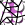

 graphFromLines
Component Index > SpiderWeb > SpiderWebBasic > gFL
create a graph from a set of connected lines
Inputs
| Name | ID | Description | Type |
|---|---|---|---|
| ConnectionLines | L | Lines to build a graph from | List of Line |
Outputs
| Name | ID | Description | Type |
|---|---|---|---|
| G | Graph representation of lines | Generic Data | |
| GP | 3d points of the graph | Point |
Copyright © 2016 Robert McNeel & Associates.